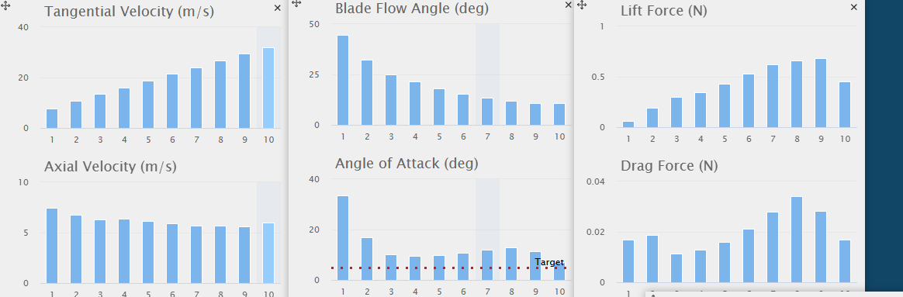

Adv. Engineering and design
Fusion Tutorial Parts
Fusion tutorial parts was a beginner introduction of the use of fusion360. Fusion360 is a comercial computer-aided design (CAD) programmed created by the software corporation Autodesk. It also can be used as a computer-aided manufacturing (CAM), or a Printed circuit board (PCB) design application. The assignment was to create and model random componenets and parts that look like they would go on something else. This program was more difficult for me to understand and use as it was more complex and sophisticated. Learning how to start from scratch on different pieces was a struggle for me, especially since I have never used fusion 360. one of the most helpful pieces of information was that when starting on a specific compenent to build, if you do not start the right way, you could end up messing yourself up for the rest of the project. Continuing to learn the ins and outs of this software year long will be a journey, but overall Fusion360 is a wonderful software application and could be very useful in the future. Some individuals in my class have more experience than me so getting help will be really easy to do.
Bridge project
For the second half of the first semester. Our project was to build and design a bridge out of carboard and 3D printed corkscrew nails to hold the bridge in place. Then, at the end of our designing phase, our bridge would be put to the test be placing evenly distributing weight across the road part of the bridge. Weight would slowly be added on to the bridge until it collapsed. This would then be judged and decided as to who won. The most efficient and the most weight carried. This project ws fairly easy as we the most successful bridge in the class. we minimized the use of screws within our bridge because we understood that the more holes we had within our bridge, the less integrous our bridge would be.
Weight holding capacity: around 66lbs

Wind Turbine KidWind Competition
KidWind turbine competition guidebook
Link to all information and data
For the first half of the second semester, our advanced engineering and design class participated in the KidWind wind turbine competition. The competition involved researching, design, testing, and fabricating our own wind turbine blades to have the highest electrical energy output. Each team had their own unique design for their blades where we tested it with our own indsutrial-sized fan. One of the challenges we faced were the geometry created by the fabrication of the blades themselves. The geometry wasn't smooth at all and messed with the aerodynamics of the blade.
bioEHSC UC Berkeley Bioengineering and biomedical engineering research competition
BioEHSC is an annual team research and design competition for high school students, taking place every spring and hosted by the UC Berkeley Bioengineering Honor Society. To help high school students explore bioengineering, BioEHSC asked contestants to identify a problem in medicine or biology and designed a bioengineering solution in seven weeks. Contestants worked in groups of four or five and receive mentorship and advice from a bioengineering-focused researcher throughout the competition period. After the seven weeks, contestants pared a scientific poster and sentation that detailed their proposed solution and analysis of their approach. They then sent their findings for evaluation to a panel of professors, graduate students, and industry professionals in a final research symposium.
Our team, Oliver Barnes, Joshua Becker, Kai Chao, Jessee Osteen and I. We addressed the problem of food waste and plastic pollution and researched a new PLA plastic based off of Banana waste. Since Banana waste throughout the world is substantial. Our team identified our issues and found specific factual evidence, researched the topic, analyzed potential problems, and researched testing on how feasible a new PLA plastic might be. We also researched the integrity of PLA plastic, and how it would hold up compared to petroleum based plastics. I Personally worked on the Draft for our Team video and oversaw the whole project. Checking for discrempancies and errors through each piece of the project.